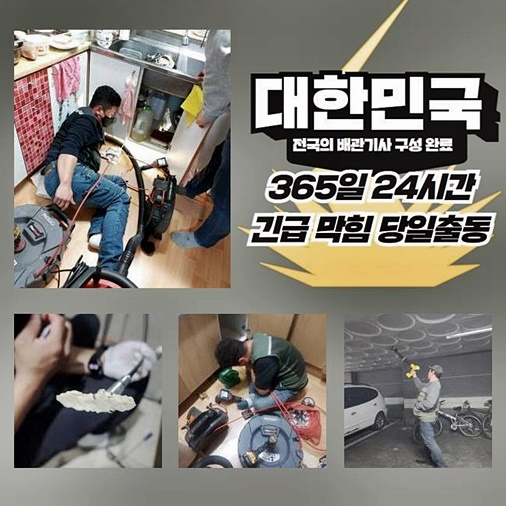
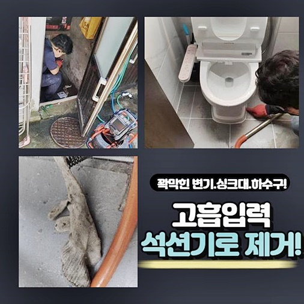
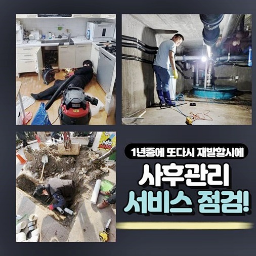
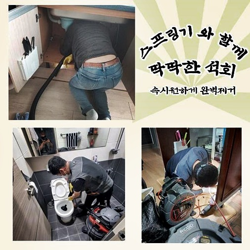
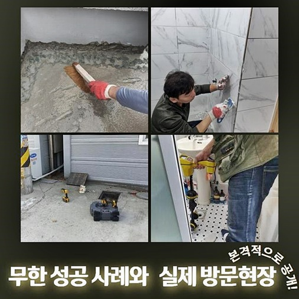
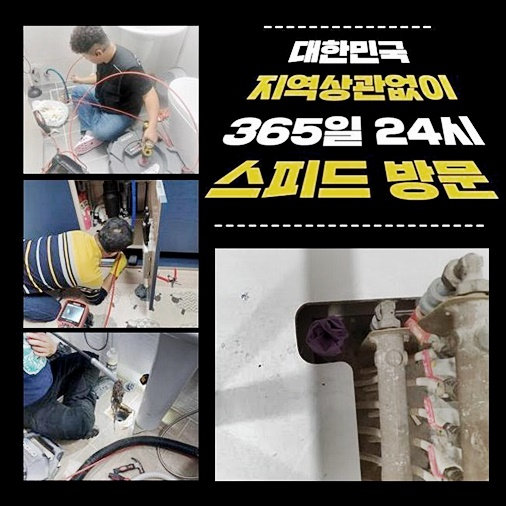
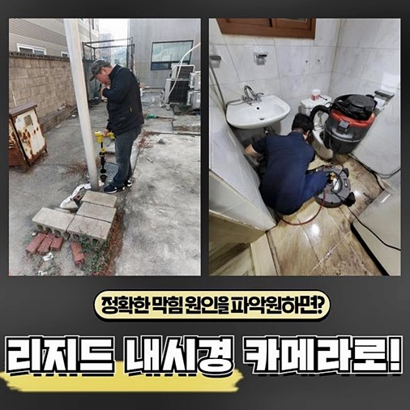

🏠 구리시 갈매동싱크대배수구막힘 아천동 냄새차단 배관공사
용인시 처인구 배관막힘 전문 시공 후기

📋 작업 개요
- 위치: 용인시 처인구, 수원시 영통구, 화성시 동탄
- 서비스 유형: 배관막힘, 하수구청소, 고압세척, 내시경점검
- 작업 일시:
- 업체명: 하수구수사대 (010-5615-2118)
🔍 문제 상황
구리시 갈매동싱크대배수구막힘 아천동 냄새차단 배관공사
베란다나 욕실 등 일상생활에 물을 계속해서 쓰게 되는 영역이라면 물이 막히는 상황도 비일비재하게 생기는데 그 사유를 들여다보면 별 생각 없이 내려보낸 잔반이나 찌꺼기로 인해 형성되는 사건이 다수를 차지합니다
쉽게 행하는 일인 동시에 명백한 이유로 일어나는 현상이지만 해결 과정의 복잡성은 매우 높다고 볼 수 있겠죠
하수구 전용 청소도구를 이용하여도 해결책이 되지 않는 형편이라면 당장 전문인의 맞춤 클리닝을 받아야만 할 겁니다
그대로 내버려 두면 세대 내부 막힘에만 한정되는게 아니라 이웃한 세대에게도 크고 작은 곤란함을 주게되는 문제까지 번질 수 있습니다
이번에 방문한 문제 현장도 마찬가지로 위급한 상태였고 즉시 조처가 필요했습니다
점검을 거치고 보니 낡은 건물이었고 갖은 방법을 수소문해서 셀프로 뚫어보려 했으나 딱히 개선은 없었는데요
입구 부근에 자리한 하수관의 봉쇄 사건이라면 가능할 수 있어도 막혀버린 하수구를 쉽게 접근하여 오물을 밀어내는 것 자체도 절대 쉬운 일이 아닙니다
전문가용 뚫음 장비를 접목해서 문제점을 두루 짚고 절차를 계획하는 일이 다가올 미래에 동일한 사안이 유발되지 않도록 조치하는 자구책에 속합니다
하수구 막힘은 보편적으로 안일한 생활 속 행동으로 야기되는데 보통은 딱히 집중하지는 않는 사안이 중첩되어 진짜 오류를 생성하는 거죠
물에는 녹지 않는 비수용성의 오일리한 물질을 개수대 구멍으로 폐기하거나 각종 육류의 뼈와 같이 폐기되기 까다로운 물질을 그저 하수관 내부로 폐기처분하게 됩니다

🔎 원인 분석
💡 전문가 진단: 정밀 진단 장비를 사용하여 슬러지의 고착 여부를 판명하고 타격/세척 작업을 실시했습니다.
개수대의 주름관이 달린 주변부를 체크해 봤더니 역류된 물로 엉망이 되었고 골이 아픈 하수구 냄새도 심각한 상황으로 보였습니다
근처만 둘러봤는데도 수도시설을 다루는 고객님의 주의부족으로 인한 사안이지 않을까 하는 정당한 의구심을 품게 되었습니다
이곳저곳의 상태를 판단해본 다음에 흡입 기능의 석션기를 들여보내는 것만으로도 물의 통로가 뚫리나 살펴보기로 결정했어요
바로 돌입하긴 곤란했는데 아랫부분의 장이 석션기가 들어가기에는 공간 제한이 너무 심하여 탈거가 들어가야 했습니다
쿨하게 오케이 해주셔서 살짝 분리시킨 다음 석션기 작업을 시작하여 청소를 수행하게 됐습니다
이 절차는 간단해서 세정 단계를 실시하면서 집주인분과 시설과 증상에 대한 내역과 역사들에 대한 질문을 주고 받게 되었습니다
실제로 이사한 날짜도 비교적 최근이었고 통로가 꽉 막힐 수준으로 물질을 단지 하수구 라인으로 버린 건 결코 없다며 당당히 말씀하셨어요
앞서 거주하시던 분이 큰 고려없이 싱크대를 이용하셨을 것 같다고 확신할 수 있었는데 권리가 양도됐으니 당연한 처사입니다
어떠한 절차에 입각하여 접근해야만 향후에 다를 바 없는 재발 문제가 찾아오지 않을 지에 관련한 공지도 해드렸어요
작업했던 곳의 모습은 결코 간과할 수 없을 정도의 물의 역행이 있었고 악취까지 풍겼었고 작은 크기의 벌레가 기어다니는 모습이었어요
환기가 잘 안되다보니 공기조차 찝찝했는데 만일 모르고 지나갔다면 곰팡이와 같은 심각한 상황까지 이어지게 되는 벼랑 끝에 서있는 상태였죠

🔧 작업 과정
석션기 동원으로는 주목할만한 진전이 있는 완성도는 떨어졌네요
약간의 잔수랑 흡입 노즐로 처리하는 평균에서도 가장 최소 범위라고 보아도 무방한 수준의 찌꺼기나 덩어리만 겨우 나왔을 뿐이었죠
기본에서 많이 나아간 수준까지는 안갔으면 석션장비만 활용해도 제법 뚫림이 일어나는데 흡입하는 작업으론 복구되기는 턱도 없는 형편이라는 점을 감지해 낼 수 있었죠
다음 스텝은 배관에 적합한 내시경 장비를 동원하여 병변이 어디쯤에 있고 오염원의 속성은 뭔지 관찰해 보았어요
섬세한 내시경 촬영기기만 스마트하게 쓰면 에러난 곳을 제대로 분석할 수 있다보니 상당히 효율적이라고 자신있게 말하고 싶네요
촬영을 해봤으나 해당 작업장은 막힌 단계가 과잉된 상태라서 배수로 라인이 자취를 감춘 수준이었고 기름덩어리같은 부유하는 부유물만 엄청난 양으로 머물러있는 모습이 촬영됐을 뿐이었습니다
더욱 구체화된 관찰은 어려울 것 같다고 판단 후에 곧장 샤프트 장치를 안으로 돌려서 관로의 가장자리를 본격 세척하기 시작했어요
해당 샤프트 장비는 청소기 방식으로 배관 내부의 문제요소를 마무리하는 활동이 아니라 빠르게 돌아가는 헤드의 사슬을 활용하여 시행하는 물리적 제거법으로 세척에 들어가므로 효과가 눈에 드러나요
취약한 배관 내에서 약간이라도 마찰이 가해진다면 상처같은 일어나지 않았을 문제까지 속출할 수 있으므로 장비의 적절한 활용을 들여서 집중해야 합니다
배수로의 부식 정도가 심한 수준의 가정집이라면 다양한 오류가 습관처럼 피어오르는 부분이니 계속해서 관찰하면서 청소를 진행해야 할 필요성이 있겠죠
아울러 청소 중에 투출되는 기름 때와 여러 부착된 오염원이 파이프로 자리를 옮겨서 막힘의 전이를 일으키는 사건이 나타나지 않게 석션 청소도 필히 끈기 있게 수행해야 해요
개수대로 이동해서 배수 테스트를 시행해 봤더니 고민 사항이던 물이 느릿하게 흘러가는 현상이 깨끗이 없어진 점을 판별하게 됐어요
고여있던 물들의 폐기가 한방에 되는 점을 확인하시곤 고객님도 장기간 골머리를 앓아온 하수구를 제대로 해결해 줬다며 감동하셨습니다
깊숙한 곳까지 침범한 막힘 조건이라면 좀 더 빠르게 전문 하수도 업체로 연락하셨다면 쉽게 해결됐을 것이 분명하긴 했어도 늦게나마 저희에게 의뢰를 맡겨주신 부분이 신의 한수였다고 싶더라고요
하수구청소 이후의 모습이 감격하셨는지 베란다 하수구 청소까지도 요구를 해주셨습니다
사전에 통지된 사안이 아니긴 했지만 아직 철수하기 전인 상황이기도 했으며 처리해야 할 작업량이 평균 이상은 아닌듯해 흐름을 이어가서 뚫었습니다
내부를 탐방해 보는 카메라를 활용해 배관 속 면면의 수준을 판단해 보면서 본세척에 돌입했지요


✅ 작업 완료
회전력이 좋은 샤프트를 활용해 작업을 한 결과 바로 수로의 확보가 지체 없이 나타났네요!
베란다 쪽에 썩은 악취가 심각해서다행히 큰 난관에 부딪히지 않고도 정체된 사항이 뚫려서 뿌듯함이 두 배였네요
이러한 베란다는 물론 싱크대 등의 이슈라면 적임자는 저희 하수구 막힘을 전문으로 하는 전문가가 직접 보는게 적합하답니다
갖은 도구를 써도 해결하지 못하신다면 많은 노하우를 갖춘 저희에게 연락해 주신다면 기존의 기대 수준 이상을 훌쩍 넘는 결과물을 체감하시게 될겁니다
즉시 출동하여 최선의 결과로 전후 변화를 보여드리는 업체라는 것을 당당하게 알려드리며 글을 마치도록 하겠습니다




⚠️ 하수구 배관 막힘 예방 및 관리 가이드
- ✅ 머리카락, 비닐, 물티슈 등 물에 분해되지 않는 이물질은 절대 흘려보내지 마세요.
- ✅ 기름기 많은 식기는 설거지 전 키친타올로 먼저 기름때를 닦아내세요.
- ✅ 주기적으로 배수구에 뜨거운 물을 가득 부어주어 유지방 고착을 방지하세요.
- ✅ 작업 후 1년 이내 재발 시 무상 A/S 보증 서비스를 제공합니다.
💡 핵심 정리
- 확실한 장비 작업(내시경 점검 및 샤프트 스케일링)으로 원인을 뿌리 뽑습니다.
- 작업 후 1년 이내에 동일한 부위 재발 시 100% 무상 A/S 서비스를 보장합니다.
- 서울 · 경기 · 인천 전 지역에 24시간 언제든 긴급 출동할 수 있도록 항시 대기 중입니다.
❓ 자주 묻는 질문 (FAQ)
🚨 용인시 처인구 배관막힘 문제로 고민이신가요?
정확한 원인 진단과 확실한 시공으로 재발 없는 해결을 약속드립니다.
24시간 긴급 출동 | 서울 · 경기 · 인천 전지역 | 1년 내 재발 시 무상 A/S